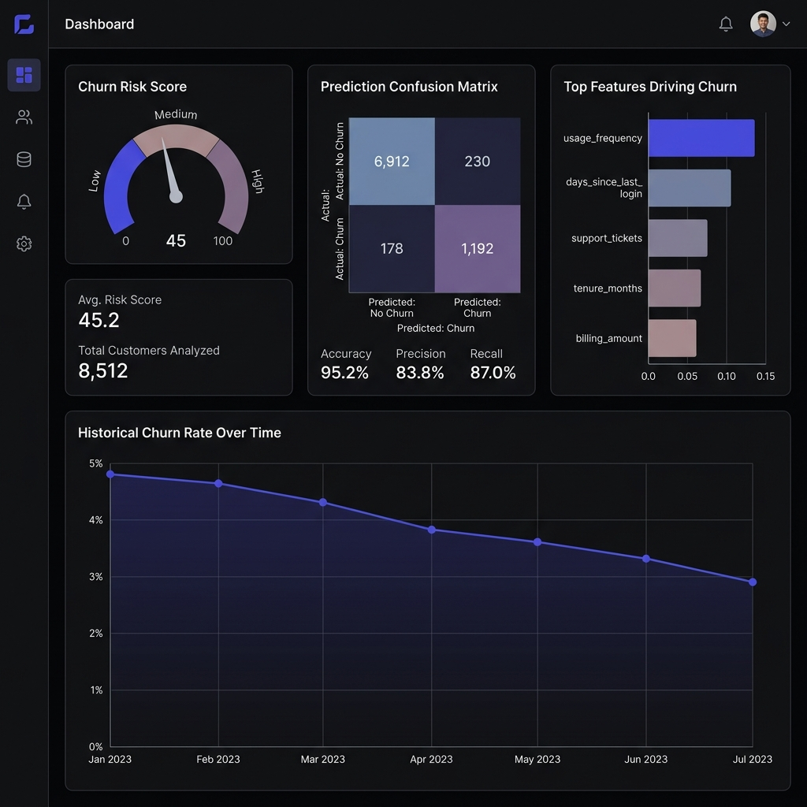
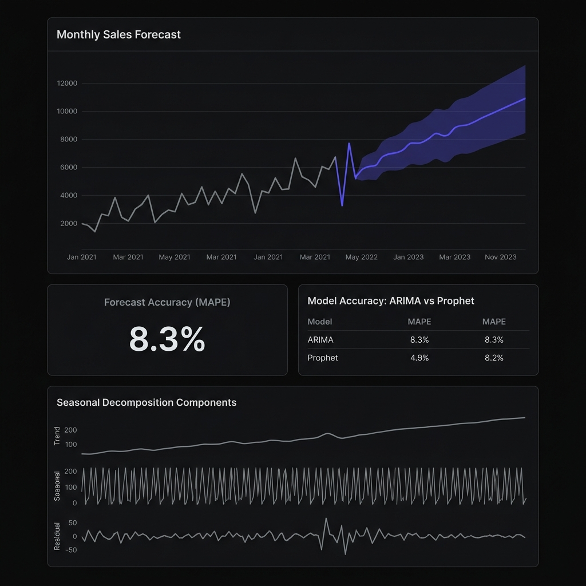
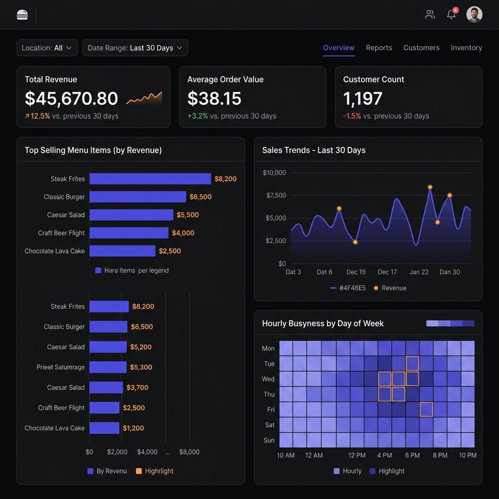
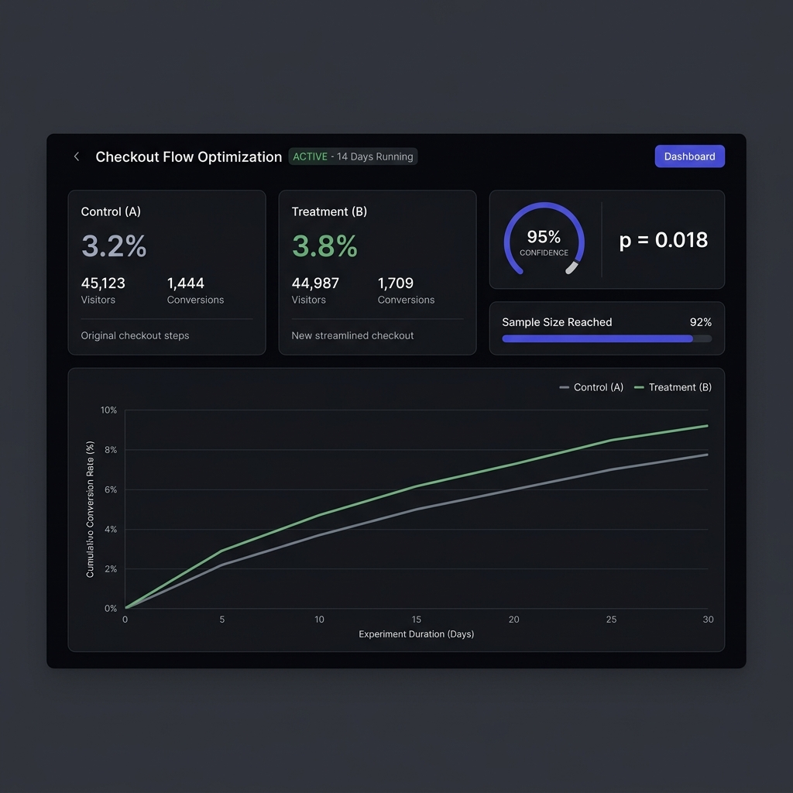
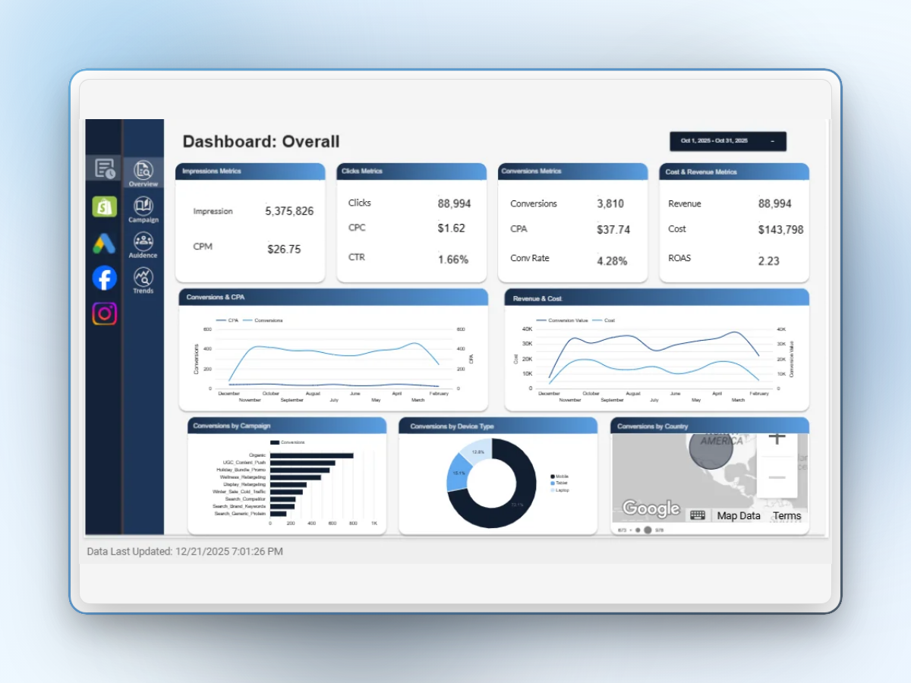
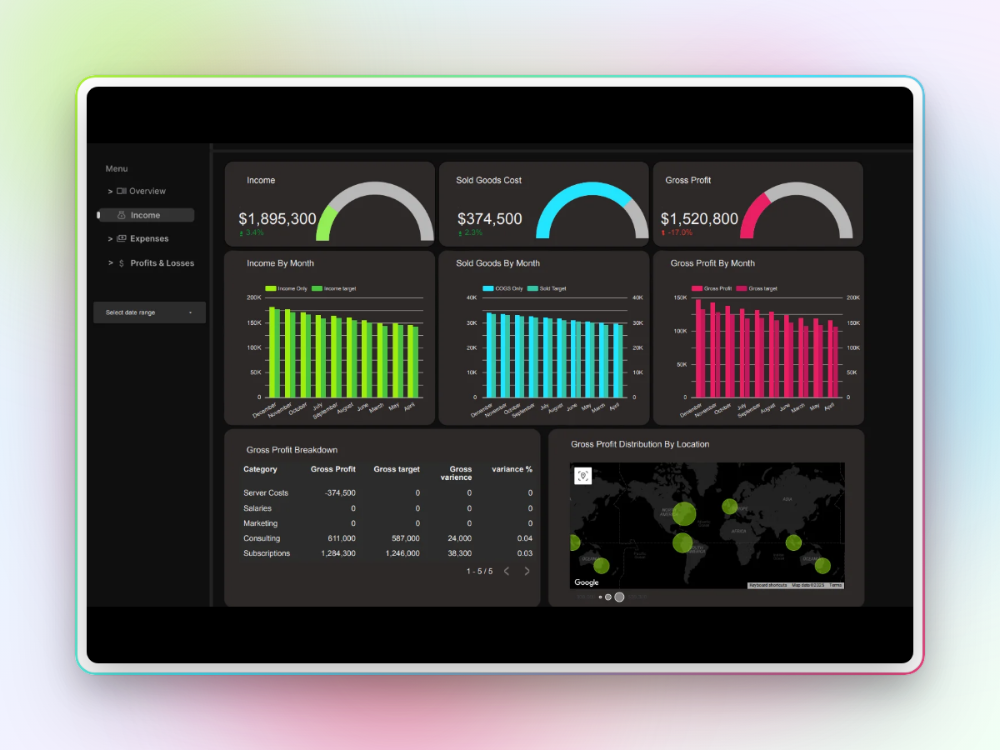

I improve retention, forecasting, and product decisions using ML + analytics.
Built real-world analytics systems with measurable impact — retention, forecasting, and growth.
End-to-end ML systems — from raw data to dashboards to decisions. Focused on outcomes that drive action.
Delivered analytics and ML systems in real contexts — freelance, open source, and production-style builds.
ML is only useful if it leads to decisions.
I build end-to-end systems that can be measured — not one-off models in a notebook.
ML is only useful if it changes a decision
If the model doesn't lead to an action, it's a report — not a system
Systems > one-off analysis
Reproducible pipelines beat ad-hoc notebooks every time
Ship simple, measure impact
A simple model in production beats a complex one in a notebook
Problem → system → metric → business decision.

Identified high-risk users early — enabling targeted retention instead of blanket campaigns.
AUC improved 0.71 → 0.84 on 50K telecom users

Reduced forecasting error to enable better inventory and resource planning decisions.
MAPE improved 14.1% → 8.3% using ARIMA + Prophet

Enabled teams to track key metrics and make faster, data-driven operational decisions.
Automated ELT pipeline surfacing revenue trends & margins daily

Built a reusable experiment engine to validate product changes with statistical confidence.
Confirmed +18% conversion lift — a real product decision
Interactive dashboards built with real data — click to explore each system live in Looker Studio.

Tracks impressions, clicks, conversions, and ROAS across campaigns. Identifies high-performing channels and optimizes spend.
View Live Dashboard →
Revenue, costs, and profit trends over time. Highlights performance changes, category breakdowns, and geographic distribution.
View Live Dashboard →Grouped by how I use them. Strong focus on learning fast and applying concepts to real datasets.
Feedback from real projects — freelance analytics, data consulting, and collaborative work.
Excellent technical expertise and strong problem-solving skills. His ability to turn complex data into clear, actionable insights was impressive. He consistently delivers high-quality work on time.
Professional, responsive, and delivered high-quality work on time. Communication was clear and attention to detail was excellent.
Raj is professional, communicates clearly, and understands requirements well. Delivered quality work on time.
Reliable, communicates well, and completes tasks efficiently. I'd be happy to work with Raj again.
Systems-oriented and ready to contribute from day one.